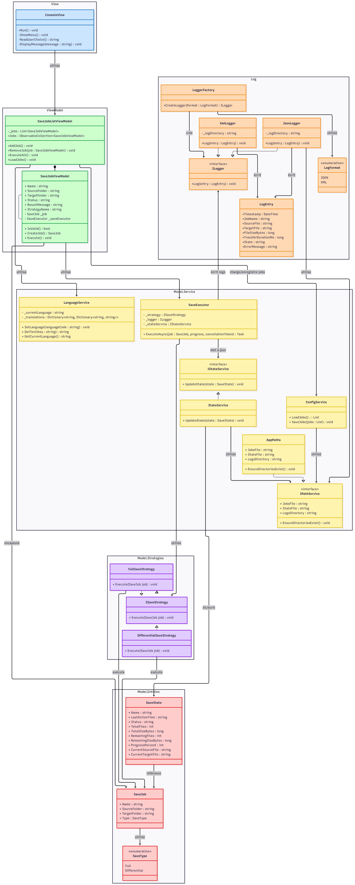

v1.1 — XML Logger & LoggerFactory¶
Date de livraison : Livrable 2 (avec v2.0)
Statut : ✅ Livré
Interface : Console (même que v1.0)
Contexte¶
Un client important a refusé de passer à la v2.0. ProSoft a donc livré une évolution mineure de l'application console avec le choix du format de log.
Nouveautés par rapport à v1.0¶
1. Format de log configurable (JSON ou XML)¶
L'utilisateur peut choisir le format de ses logs journaliers dans les Paramètres (option 6 du menu).
La préférence est sauvegardée dans settings.json.
<LogEntry>
<Timestamp>2026-05-11T14:00:00Z</Timestamp>
<JobName>backup-docs</JobName>
<SourceFile>D:\Documents\rapport.txt</SourceFile>
<TargetFile>E:\Sauvegardes\rapport.txt</TargetFile>
<FileSizeBytes>4096</FileSizeBytes>
<TransferDurationMs>8</TransferDurationMs>
<EncryptionTimeMs>0</EncryptionTimeMs>
</LogEntry>
2. LoggerFactory¶
LoggerFactory est instanciée au démarrage et lit le format configuré dans settings.json pour retourner le bon logger (JsonLogger ou XmlLogger). Toutes les évolutions d'EasyLog.dll restent rétrocompatibles avec la v1.0.
// EasyLog — interface commune
public interface IEasyLogger
{
void Log(LogEntry entry);
}
// Sélection automatique
IEasyLogger logger = LoggerFactory.Create(settings.LogFormat);
Menu mis à jour¶
1. Lister les travaux
2. Ajouter un travail
3. Exécuter un ou plusieurs travaux
4. Supprimer un travail
5. (réservé)
6. Paramètres ← NOUVEAU
0. Quitter
Dans l'option 6 Paramètres, l'utilisateur bascule entre JSON et XML. Le changement prend effet au prochain log.
Fichiers modifiés¶
| Fichier | Changement |
|---|---|
EasyLog/XmlLogger.cs |
Nouveau — écrit les logs en XML |
EasyLog/LoggerFactory.cs |
Nouveau — sélectionne JSON ou XML |
EasySave.Core/Services/ConfigService.cs |
Lit/écrit LogFormat dans settings.json |
EasySave.Console/ConsoleView.cs |
Option 6 Paramètres |
Rétrocompatibilité¶
EasyLog.dll v1.1 reste 100 % compatible avec v1.0 :
- JsonLogger et LogEntry : signature inchangée
- XmlLogger et LoggerFactory sont de nouvelles classes — pas de changement cassant
Diagrammes¶
UML v1.1¶
